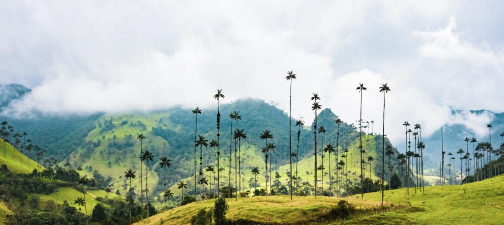

El Valle del Cocora es uno de los paisajes mas emblematicos de Colombia, ubicado en el municipio de Salento, en el departamento del Quindio. Es famoso por sus imponentes palmas de cera, el arbol nacional de Colombia, que se elevan entre la niebla y los pastizales verdes creando un paisaje unico en el mundo.
El valle hace parte del Parque Nacional Natural Los Nevados y es considerado uno de los destinos ecoturisticos mas importantes del pais. Cada ano miles de turistas nacionales y extranjeros llegan hasta Salento para caminar por sus senderos y admirar sus paisajes.
La palma de cera del Quindio es la palma mas alta del mundo y el arbol nacional de Colombia desde 1985. Puede alcanzar hasta 60 metros de altura y vivir mas de 100 años. Su tronco esta cubierto por una capa de cera blanca que la protege del frio de las montañas.
Esta especie esta en peligro de extincion debido a la deforestacion y a que su reproduccion es muy lenta. Por eso el Valle del Cocora es un lugar clave para su conservacion. Cortar una palma de cera en Colombia es un delito castigado por la ley.
La actividad principal es el senderismo. El recorrido mas popular dura entre 4 y 6 horas y pasa por bosques de niebla, riachuelos y mirador desde donde se ven las palmas de cera en todo su esplendor. El camino es de dificultad media y es apto para personas sin experiencia en montañismo.
Desde Salento tambien se pueden hacer recorridos a caballo por el valle, visitar fincas cafeteras tradicionales, y conocer el pueblo de Salento, famoso por su arquitectura de colores y su cafe de alta calidad. El mercado artesanal del parque principal es otro punto de interes.
El clima del Valle del Cocora es frio y variable, con temperaturas entre 14 y 18 grados centigrados. Es comun que haya neblina especialmente en las mañanas, lo que le da un ambiente mistico al paisaje. Se recomienda llevar ropa abrigada, impermeable y botas o zapatos resistentes al barro.
La mejor epoca para visitar es entre diciembre y enero, y entre junio y agosto, que son los meses de menor lluvia. Se recomienda llegar temprano en la mañana para disfrutar mejor del paisaje antes de que llegue la niebla del mediodia.